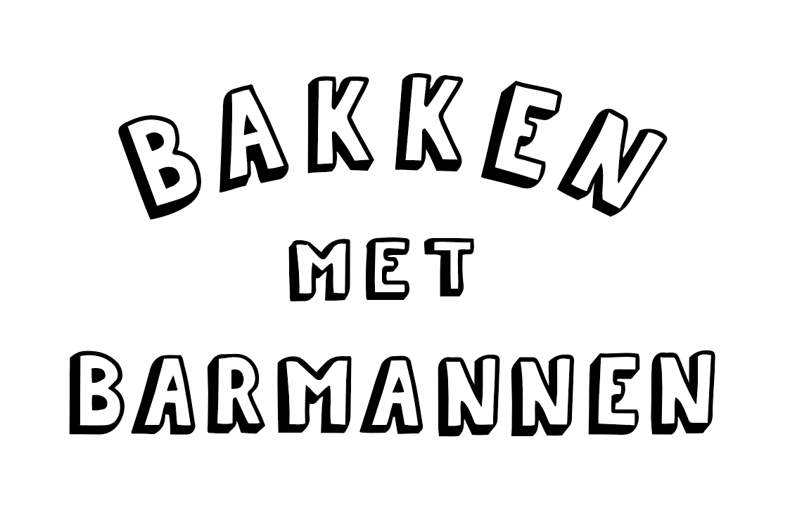
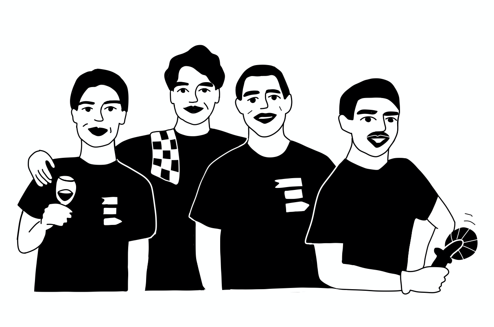
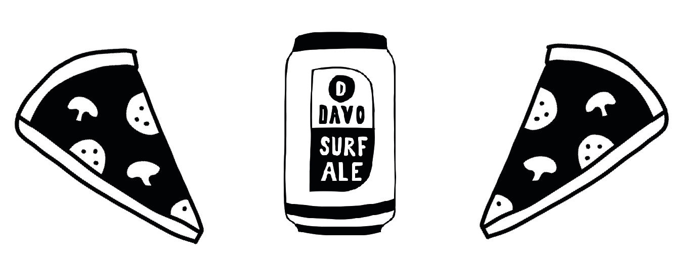
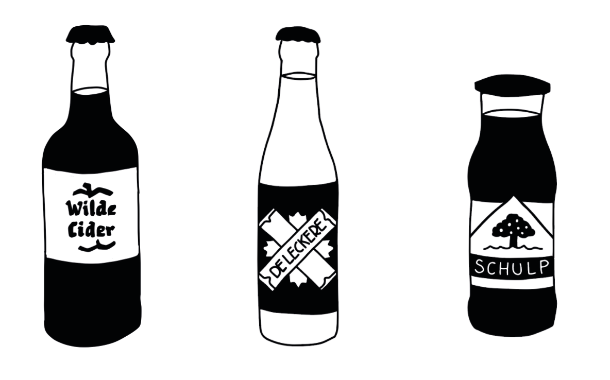
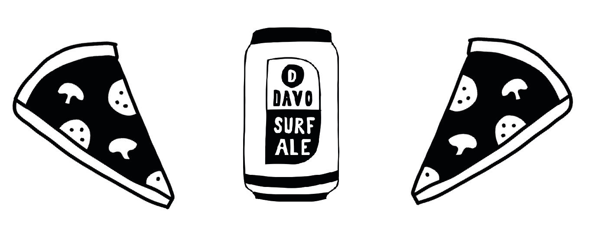
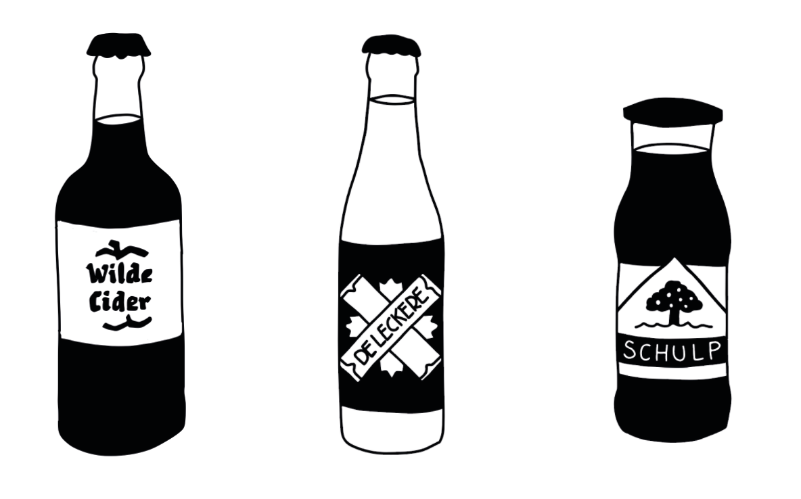

BAKKEN MET BARMANNEN
'Bakken met Barmannen' is an intiative of a dutch startup 'de Jongens van de Bar'. With 'Bakken met Barmannen' they have pop-up pizza trucks where they sell local drinks and bake pizza. They raise money for the fight against corona in Africa. I made the illustrations for them.




